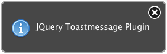

jquery-toastmessage-plugin is a JQuery plugin which provides android-like notification messages. It's a quite
nice way to report info or error to the user.

jquery-toastmessage-plugin's main features are:
- Informations are introduced as toastmessages to the user in a seamless and natural way
- Toastmessages may or may not disrupt the user and they are still informative
- 4 different predefined types of toasts: notice, success, warning and error
- Fully customizable
- Easy to use API
Documentation
jquery-toastmessage-plugin documentation is available on the wiki.
License
jquery-toastmessage-plugin is licensed under the Apache License 2.0. The project was founded by akquinet A.G..
Download
You can download this project in either
zip or
tar formats.
You can also clone the project with Git
by running:
$ git clone git://github.com/akquinet/jquery-toastmessage-plugin